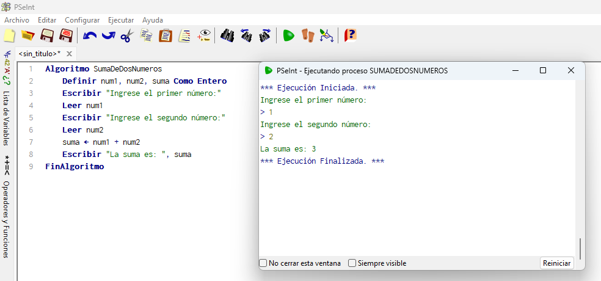

Concepto y utilidad
El pseudocódigo es una forma de escribir un algoritmo usando palabras del lenguaje normal junto con algunas instrucciones parecidas a las de un lenguaje de programación.
Sirve como paso intermedio: primero se escribe la idea de la solución en pseudocódigo y después se traduce al lenguaje de programación que se vaya a usar. Un programa muy usado para practicarlo es PSeInt.
Variables y tipos de datos
Una variable es un espacio donde se guarda un dato. Se declara con la palabra Definir indicando su tipo:
- Entero: números sin decimales (5, 12, -3).
- Real: números con decimales (3.5, 12.75).
- Cadena: texto entre comillas ("Hola").
- Lógico: solo puede ser Verdadero o Falso.
Asignación, lectura y escritura
- Asignación (<-): guarda un valor en una variable.
- Leer: pide un dato al usuario y lo guarda en una variable.
- Escribir: muestra un mensaje o el valor de una variable.
Ejemplo en PSeInt
Algoritmo que pide dos números y muestra la suma:
Algoritmo SumaDeDosNumeros
Definir num1, num2, suma Como Entero
Escribir "Ingrese el primer número:"
Leer num1
Escribir "Ingrese el segundo número:"
Leer num2
suma <- num1 + num2
Escribir "La suma es: ", suma
FinAlgoritmo